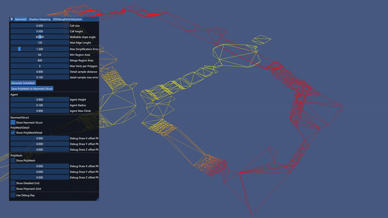
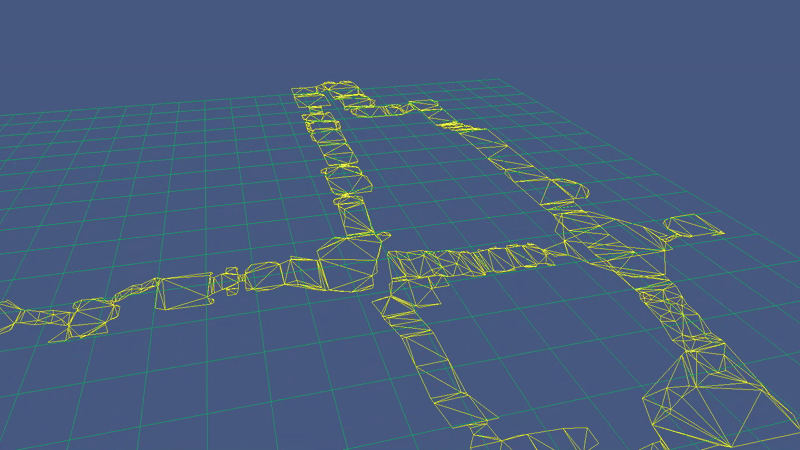

Navmesh Creation Tool for building and/or importing Navmeshes via Recast Library.
Navmesh Creation Tool for Our Game Engine
My Navmesh Creation Tool is designed to generate navigation meshes within our game engine, integrating the Recast Library to create and manage navigable surfaces. The tool allows us to import and regenerate a navmesh from FBX or OBJ files while maintaining the same parameters and processing techniques that Recast uses.
By leveraging this tool, we can ensure dynamic and efficient navigation for player and AI-controlled characters while optimizing performance.
Understanding the Navmesh Representations
Our system utilizes two different types of navmeshes:
Polymesh (Simplified Navmesh)
Optimized for efficient pathfinding.
The Polymesh is a lower-detail version of the navmesh, created by simplifying the Detailed Navmesh into a more optimized convex polygon representation. This representation is lighter and better suited for AI pathfinding, reducing computational overhead. Our pathfinding logic operates on this version, allowing AI to efficiently calculate paths through the game world.
Detailed Navmesh
Provides precise height information.
The Detailed Navmesh preserves fine-grained height variations, which allows for smooth movement adaptation to the terrain. This is crucial for getting the Y (vertical) position of characters to ensure they remain aligned with the actual walkable surface. It consists of high-resolution triangles that closely match the original geometry.
How We Use Both Representations
Character Y-Positioning: Since the Polymesh lacks height precision, we retrieve the Y-coordinate from the Detailed Navmesh.
Pathfinding: Player & AI agents use the Polymesh for fast navigation while maintaining proper height alignment using the Detailed Navmesh.
View my Navmesh Creation Tool on GitHubPathfinding using Raycast for Position

Creating and Live-Tweaking of Navmesh
By integrating the Recast library, I now have the option of tweaking all the variables and with the visualization of this I've been able to debug and generate a new navmesh more fitting to our engine/game world.
Navmesh Grid
By integrating a Grid from the Navmesh min and max bounds, getting information from the Navmesh is now quicker and cheaper.
Struggles and What I Learned
This was the first time we had to work with a 3D navmesh in our projects—until now, we had only used simple 2D pathfinding. We had heard from previous students that Unity’s built-in navmesh system could be unreliable, especially when generating complex meshes. Because of that, our group decided to integrate the open-source Recast library instead.
One of the first major challenges was simply understanding the Recast library. It's a large and powerful tool, but it includes far more functionality than we needed. This meant spending a lot of time reading through documentation and examples just to figure out what we could safely ignore. Once I understood the basics, I was able to integrate the solo mesh generation into our engine with the help of the Recast demo and some guidance from our teachers.
My first real struggle came when I noticed that the unit system used by Recast didn’t match our engine. Recast (and most similar libraries) assumes 1 unit equals 1 meter, but our engine uses centimeters. This caused strange generation results and long build times, which I initially didn’t understand. After some research, I realized I had to scale all the mesh vertices by 0.01 using a scaling matrix. Once that was done, the navmesh generation became both faster and much more accurate.
After getting the mesh generation working properly, I worked closely with my teammate Thea Nilsson to design a custom struct that simplified the Recast navmesh into a format we were familiar with. This made it easier for her to implement the pathfinding logic, while I focused on data conversion and making the navmesh renderable for debugging. You can see the full structure and usage in my GitHub repository.
Another unexpected challenge was the difference between Recast’s poly mesh and detailed mesh. At first, we only used the poly mesh for pathfinding, which worked well in terms of navigation. However, we ran into issues with inaccurate height data—in some places, it looked fine, but in others it caused visual glitches for the enemies and player. Without access to a physics system, I had to dig deeper into Recast and eventually integrated the detailed mesh data into our system. That gave us far better results, and Thea was then able to extract more accurate height information for the player character and AI.
Overall, I’ve learned a lot about working with large external libraries, how to identify and isolate the parts you need, and how to debug complex systems like navmesh generation by rendering and visual feedback. This experience gave me a much deeper understanding of how navmesh systems really work under the hood.